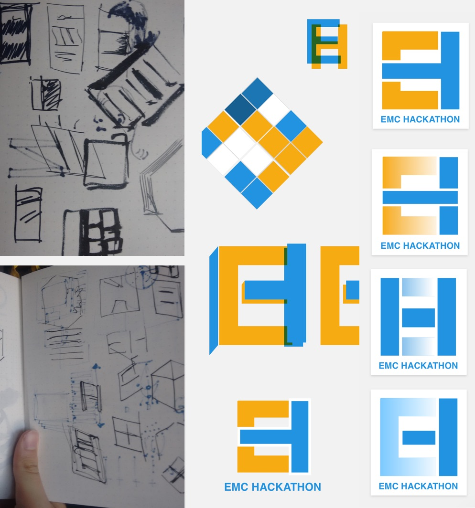
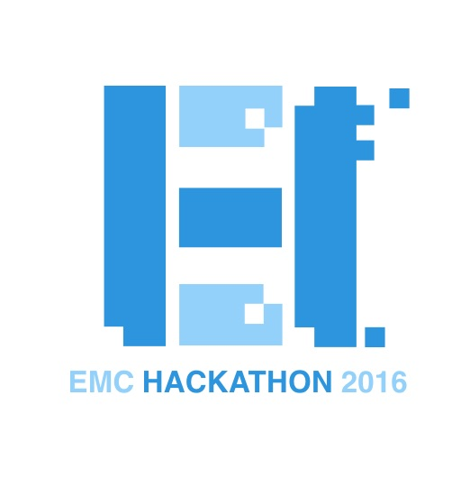
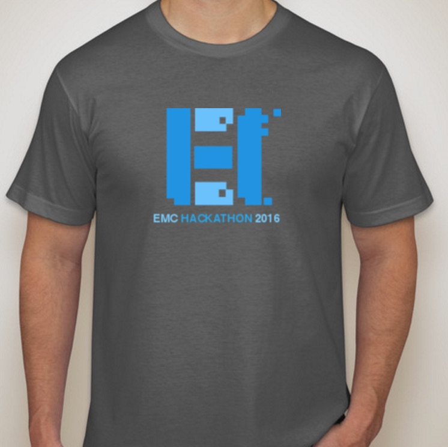
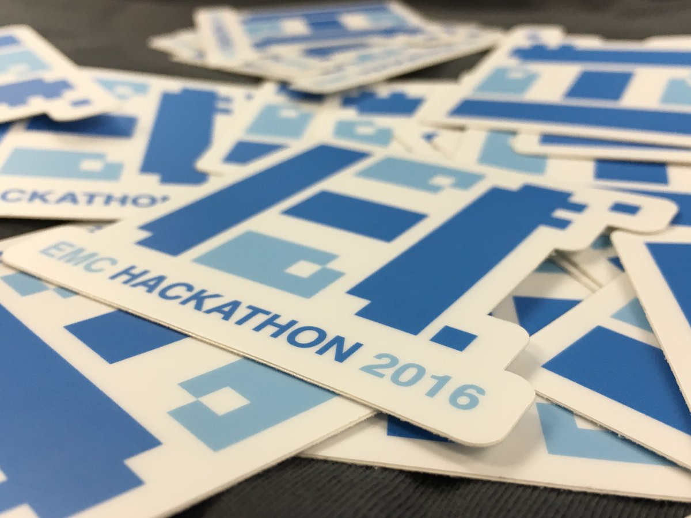
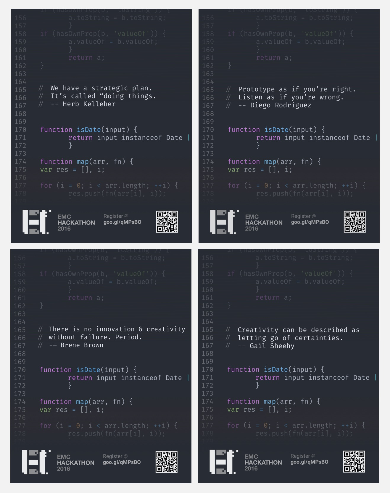

How to Design a Hackathon
So why do you have such a dumb, goofy grin?
Oh, we threw a hackathon and it was stellar. Seriously, one of the biggest successes in my career to date, probably.
But a Hackathon? That’s a little played, isn’t it?
Probably. But a lot of the people we worked with had never attended one, or had even worked at a start-up. We were transitioning over to agile and new web frameworks and the old CYOA waterfall methods just weren’t just not-helpful; they were in some cases actively undermining our attempts to efficiently take quality software to market.
So what did you do? Just throw a two day meeting on everyone’s calendar and call it good?
That would’ve been easier, but probably not as effective. No, we started with pitching upper management. Once they signed-off, we started filling the cracks and breathers in our regularly scheduled work with event planning and curriculum design.
Event Logo and Swag
Process
Final
T-shirts
Stickers
Posters
Attendance was a concern. EMC had never thrown a Hackathon before (at least at our site) and attendance was sanctioned but 100% optional. We started by comandeering the monitor to show subtle teases about the date (a mistake; the date was move 5 times because of schedule slippage) and I designed, printed and plasted the office with these posters.

The guerilla marketing paid off and we had over 60% of the site signed up for two days of hacking. This included departments other than engineering like QA and management; we had a significant variety of coding experienced, which is when the Bird-House Concept became really important.
Birdhouse?
This was an idea we landed on during planning. Remember when you were a kid learning something like wood-working? There were kits for everyone to start off with. The kids that really took to it went of on their own and wood-stained the roof, tongue-and-grooved the corners and whatever else that was well beyond me. If you were like me though, even if you weren’t experienced or gifted, you could still follow the instructions and walked away with a pretty basic birdhouse, a little more know-how and a glowing sense of accomplishment.
Ahh, birdhouse. Got it.
So once we identified three APIs (one internal, one external, one we created ourselves), we designed and built project kits off of all three.

We threw them up on Github and organized the teams with experienced leaders and less experienced team-mates so mentor/mentee relationships emerged organically. The ultimate success probably hinged on this decision.
The organizers of the Hackathon (me and four amazing coworkers) acted as the event’s floaters to unstick teams before they got too buried in technical problems.
So what did you learn?
The Hackathon was Monday and Tuesday, so probably the best thing we did was schedule a long lunch Friday for sign-up and environment set-up. A large number of attendees had never used tools like Atom or Github even, much less NPM, so this cut down on any unexpected problems that would’ve killed momentum.
What could’ve gone better?
The majority of the people who signed up were most familiar with backend and least familiar with interface design and development. Very few of the teams used the project kits directly, but everyone based their projects off of them or some other existing UI framework. Spending more time educating on that would’ve sped up development and helped people move faster.
What went great?
We were taken by surprise by the creative energy people attacked their projects with. Everyone was ambitious, despite (or maybe because) some of the greener members, and everyone delivered something finished and working.
The excitement people had just getting set up on Atom and Github . People came out of that energized and with new connections across departments. Communication was improved and we broke the sound-barrier in a way; every single team delivered something finished after just two days of hacking. The inevitability of our calcified, plodding process was disproven 9 times over those two days.
And Management thought it was worthwhile?
Absolutely. 50 people had new working relationships with coworkers completely outside of their organization. These steps started undoing the work silos that hurt our efforts so much the twelve months previously. The Directors and VPs took notice too; they asked us to travel to other EMC offices across the country and repeat the Hackathon program born in Louisville CO.
Hence the big, goofy grin. 😀
Sounds like you guys had a blast. Got any pictures?
Oh, absolutely.
Team Fantastic Five demoing their awesome internal Q&A system for #Emc @ #emchackathon2016 pic.twitter.com/q2IidRWpMI
— Zach Herring (@zherring) August 30, 2016
All emc hackathon participants getting some nice emc hackathon 2016 shirts #schwag #emchackathon2016 #EMC2016 #EMC pic.twitter.com/7TTsvEb9VE
— dehru (@dehru) August 29, 2016
Lunch is served at #emchackathon2016 #EMC pic.twitter.com/ry0G9ECIuQ
— dehru (@dehru) August 29, 2016
Team Fantastic Five demoing their awesome internal Q&A system for #Emc @ #emchackathon2016 pic.twitter.com/q2IidRWpMI
— Zach Herring (@zherring) August 30, 2016
Groupshot and collage from #emchackathon2016 pic.twitter.com/nHvJ387Lmq
— Zach Herring (@zherring) September 5, 2016